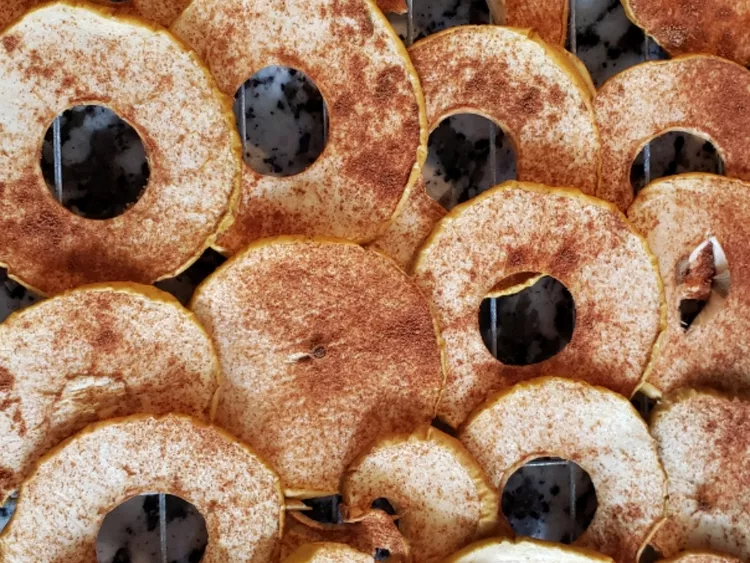

Apple Chips

These apple chips with cinnamon will disappear almost as quickly as you make them!
They're perfect for snacking and easy to take on the road. The secret is to bake them at a very low temperature for a long time, dehydrating the apples.
Ingredients
- 2 Golden Delicious apples, cored and thinly sliced
- 1 ½ teaspoons white sugar
- ½ teaspoon ground cinnamon
Steps
- Preheat the oven to 225 degrees F (110 degrees C). Line a metal baking sheet with parchment paper.
- Arrange apple slices in a single layer on prepared baking sheet.
- Mix together sugar and cinnamon in a small bowl; sprinkle over apple slices.
- Bake in the preheated oven until apples are dried and edges curl, 45 minutes to 1 hour. Use a metal spatula to transfer chips to a wire rack until cool and crispy.